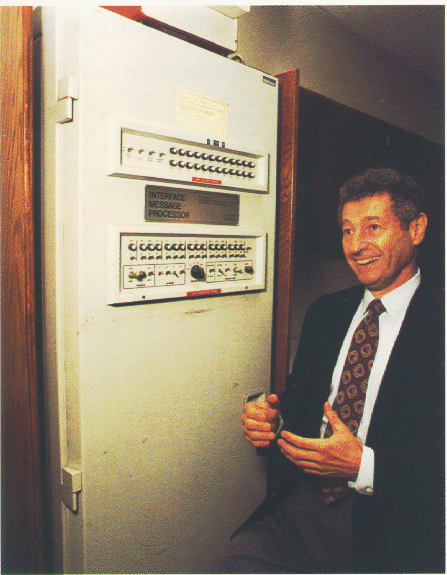
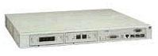
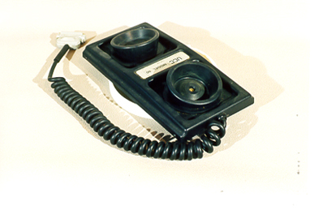
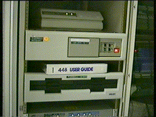
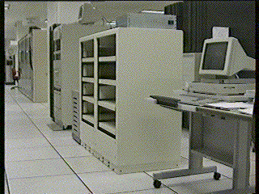
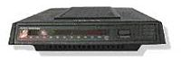
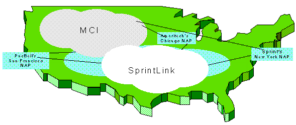

Internet Hardware and Software Technologies
- Interface
Message Processors
(IMP) were the first machines that were placed between the large
supercomputers
and the phone lines that connected the computers to the network. The
device handled the communication protocol between the host computer
and the network. Each computer of ARPAnet had to have an IMP, and each
device was connected to dedicated phone lines. These devices later became
what are today known as "routers." Since this was the first
technology of its kind, the idea of using a device such as this has
impacted computer networking as we know it today.
- A good, descriptive link about IMPs (w/ more pictures!)
- This picture is of an Interface Message Processor and Leonard Kleinrock
{kind=link}
- Packet
Radio is an alternative
to computer networking which uses radio waves instead of wires to transmit
data. Instead of a modem, or a IMP, packet radio uses a Terminal Node
Controller (TNC) to connect the computer to make the connection between
computers. While it was first used to connect computers across the Hawaiian
islands, amateur radio operators have embraced it to this day. Amateur
radio operators have always been helpful to advance technology for free,
on their own time. They have been instrumental to bringing packet radio
to the level that it is at today.
- Read more about packet radio and its use by hams
- TCP
and TCP/IP are the languages that computers use to communicate
with each other; they are also known as a "protocol." The
protocol offers a variety of services including: the transfer of files,
remote login (using the main computer from a remote location), remote
printing, and remote execution (running a program on one computer from
a remote computer) to name a few. TCP breaks up the data into smaller
pieces, while IP is responsible for sending the data to the correct
location. TCP also puts the data pieces back together and makes sure
that it is correctly received. TCP/IP emerged as a standard of communication
on the Internet. If everyone used different protocols it would be difficult
for computers to "talk" to each other. A standard protocol
makes the Internet a much more efficient creature.
- Although TCP/IP is somewhat difficult to understand, there is much to read about it.
- Name
Servers and Domain Name Servers (DNS) are the devices
(actually they are programs that run on the main network computers)
that allow network users to use names instead of numbers to send and
retrieve information. In effect, it is like being able to tell a telephone
the name of the person you wish to call instead of dialing their number.
Name servers, the first of the two technologies, were located at each
host computer in the network. They contained a list of all the possible
names that someone could connect to, and routed the information to the
number that connected with the name. Domain name servers were introduced
because the lists on each name server grew very long and demanded a
great deal of network traffic to update. The advantage of DNS is that
if a server does not know the number address that connects to a name,
it forwards the request to another DNS. In this way, messages can find
their route, but each server does not need to keep the long list of
every possible address. The standards that DNS brought were also
responsible for creating the ".com," ".edu," and
other domain names that users have become so familiar with. DNS and
name servers had a very important effect in that they make the Internet
usable to the average person. If each person had to remember the number
of each they wished to visit, everyone would have to have an enormous
"network book," much like a phone book.
- If you have your own network, you can set up your own DNS server. Here is how to do it. Or, learn how DNS works in more detail.
- Routers
are the machines/software responsible for sending information to the
proper place on the network and for making sure that it made it where
it was intended to go. While this sounds incredibly similar to TCP/IP,
routers are the machine that interprets the protocol.
In fact, if two machines attempt to communicate by using different protocols,
it is the routers job to make sure that they communicate properly. While
a routers job is simple to understand, the Internet could not function
without them. Routers at major network points have to be able to handle
millions of requests per second. This is difficult when you consider
that they must not only figure a route for the information to
travel, but they must also determine the best route--no small
task, considering the amount of traffic that flows over the Internet.
Routers are essentially the machines that make the Internet run.
- Pictured is a router for a small network from 3Com, the prices range from just over $100 to many thousands for the larger networks .
- Learn how routers work in more detail, or go to Cisco's (the "king" of routers) web page.
- Modems
are the machines that connect computers to phone lines. It is a modem's
responsibility
to translate digital data into sounds that can be sent over the telephone.
Some of the first modems were not connected directly to phone lines.
Instead, a phone's handset was placed in an "acoustic coupler"
(pictured). This technology was less than ideal, as a noisy environment
would disrupt the connection. Any loud outside sounds heard by the coupler
might be confused as a part of the data. Today, modems are what the
majority of Internet users use to connect to the network. Modems made
it possible for the existing national telephone network to be used as
a computer network.
- This picture is of a 56k modem (the same speed that most Internet users connect at today)  from the time that the NSFnet was created. Compare this to PC (notebook) card and similar modern modems of the same speed!
- Learn how modems work in more detail.
{kind=link}
{kind=link}
- Copper
Wire, T1, and T3 lines are the wires that carry the
data for telephone and computer networks.
The copper wire lines that had already established a national telephone
network were an obvious choice for computer scientists looking to develop
a computer network. To this day, copper wires are used by most Internet
users who use a modem to connect to the network. While the existing
network was one advantage of copper wire, their limitation to analogue
technology made them less than ideal for a computer network. T1 and
T3 work using fiber optics, so the technology is inherently digital.
By reading the "ons" and "offs" of the light that
travels across a fiber optic line, a computer is able to send data at
a very fast rate. These technologies are essentially the "veins"
of the Internet. They are the pipes that the Internet data flows through.
- The first picture is of an empty T1 node from the era of the NSFnet upgrade, This next picture is of a modern Cisco T1 network module.
{kind=link}
- Network Access Points (NAP) are a small number of locations (nodes) around the world where the different networks that make up the Internet interconnect. The NAPs operate at very high speeds and are connected to each other by similarly high-speed lines. The Naps are managed by commercial organizations, but are regulated by the government. The larger Internet service providers (ISP) connect to the Naps, and smaller networks are able to reach the Naps through the larger ISPs. At each NAP is a route server where the names and addresses of the various Internet sites are kept. The Naps are very significant as they provide a central location for the majority of long-distance Internet traffic to travel through (Halabi).